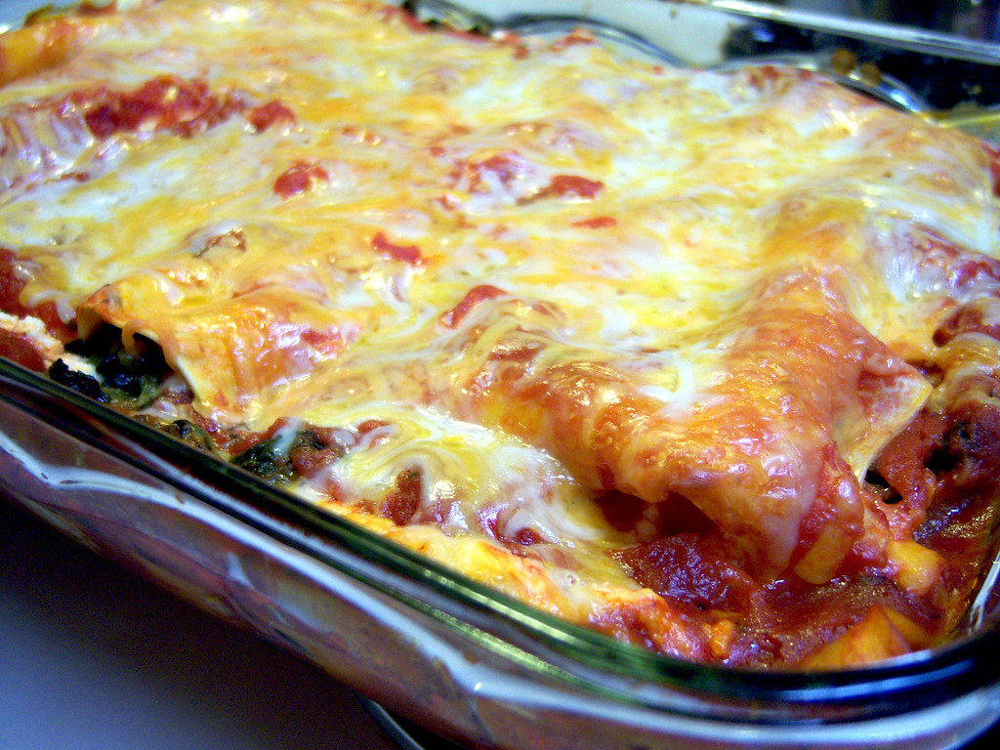

Lasagna

Description
Lasagna is a classic Italian dish made with layers of pasta, meat sauce, and cheese. It's a hearty and comforting
meal that's perfect for family dinners.
Ingredients
- 12 lasagna noodles
- 1 lb ground beef
- 2 cups marinara sauce
- 15 oz ricotta cheese
- 2 cups shredded mozzarella cheese
- 1/4 cup grated Parmesan cheese
Instructions
- Preheat the oven to 375°F (190°C).
- Cook the lasagna noodles according to the package instructions.
- Brown the ground beef in a large skillet.
- Add the marinara sauce and simmer for 10 minutes.
- Mix the ricotta cheese with the ground beef sauce.
- Layer the lasagna noodles, meat sauce, and cheese in a baking dish.
- Sprinkle the Parmesan cheese on top.
- Bake for 30 minutes or until bubbly and golden brown.
Home